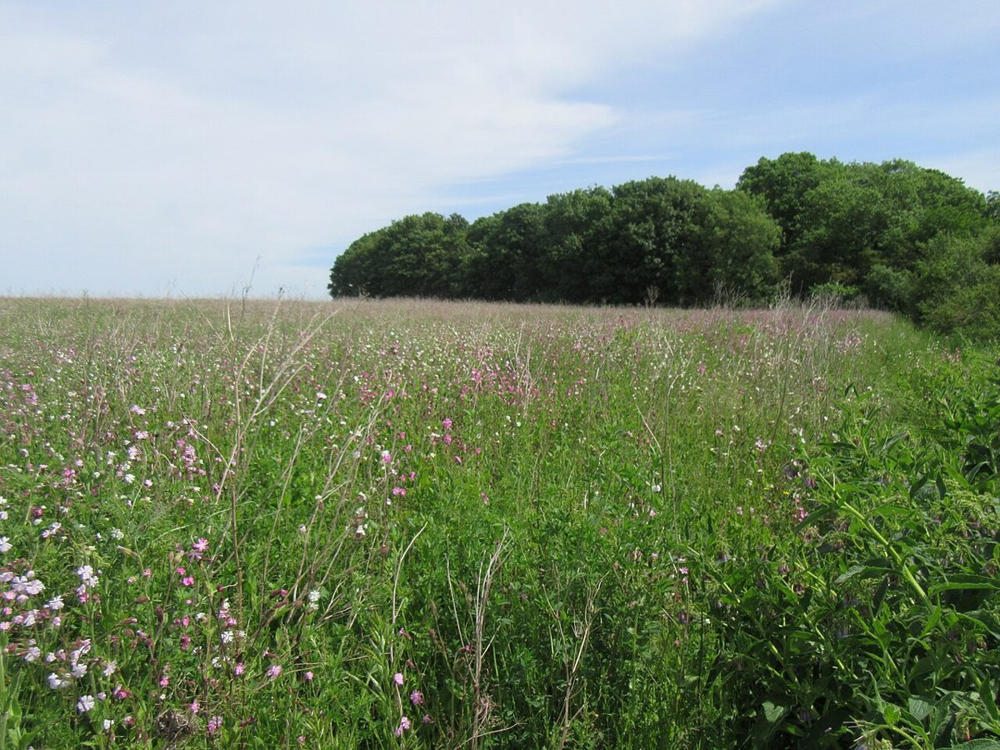

口コミ
いつか行ってみたい
お店の名前を知った人が、こんなふうに思うかもしれない。制作側が想像して創作したものです。
以下は制作側が考えた創作のイメージ例で、実在のお客様の投稿ではありません。実際の口コミ・評価とは関係ありません。
スコーンのお店と聞いて、いつか行ってみたいなと思いました。まずはInstagramをのぞいてみたいです。
高知県の津野町にあるお店とのこと。行ける日のために、場所をメモしておきたいです。
Instagramをのぞいて、お店のことをもう少し知りたいと思いました。行ってみる日を想像しています。
